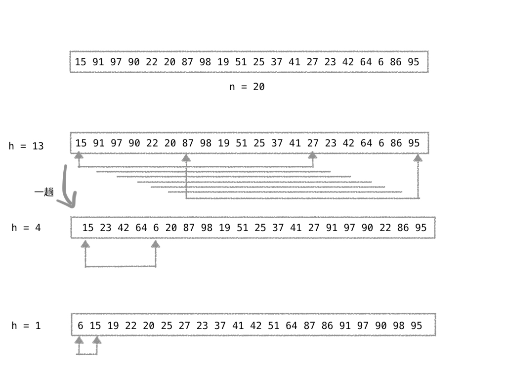
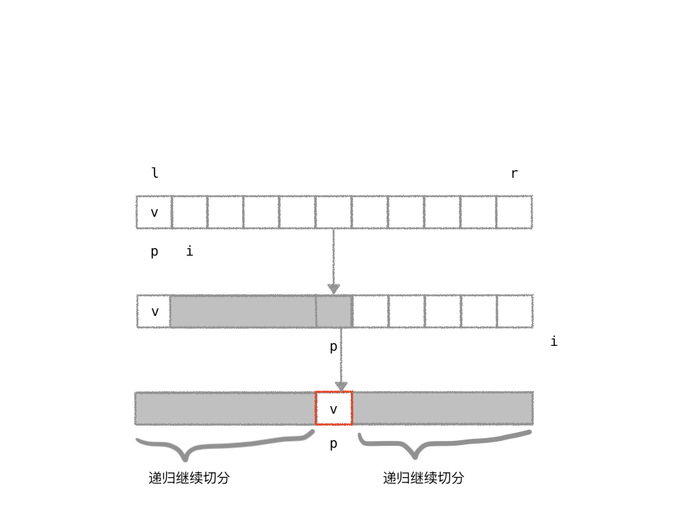
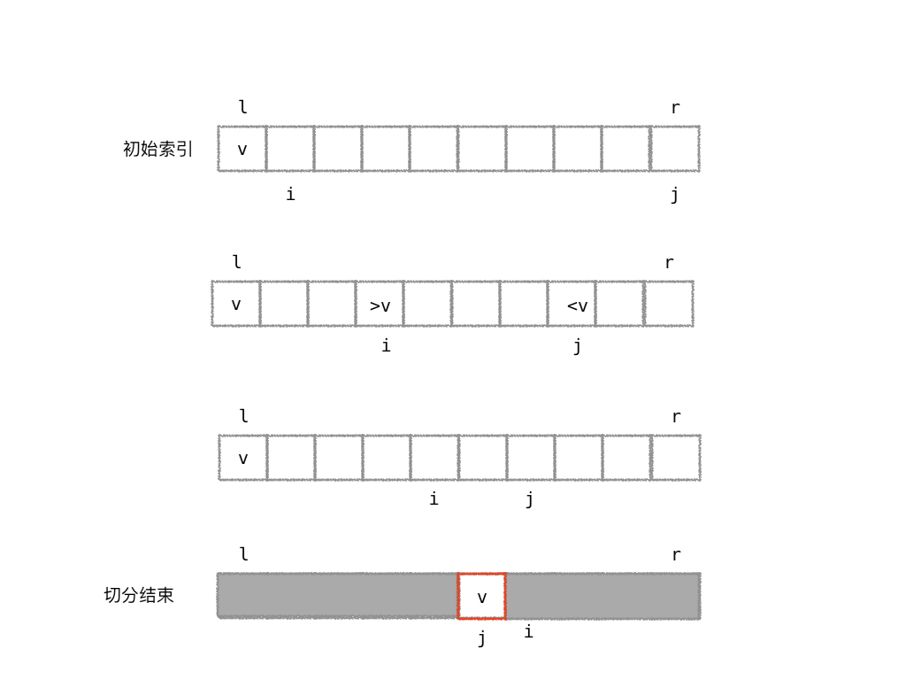
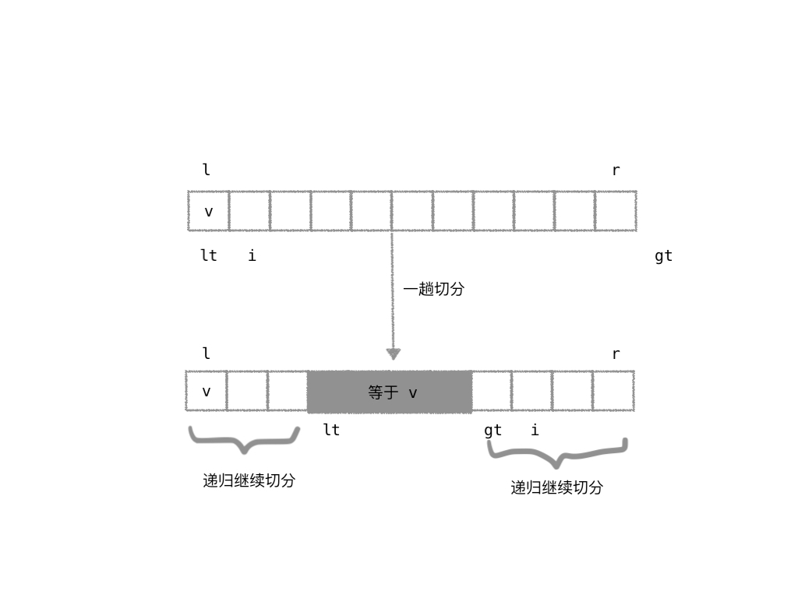
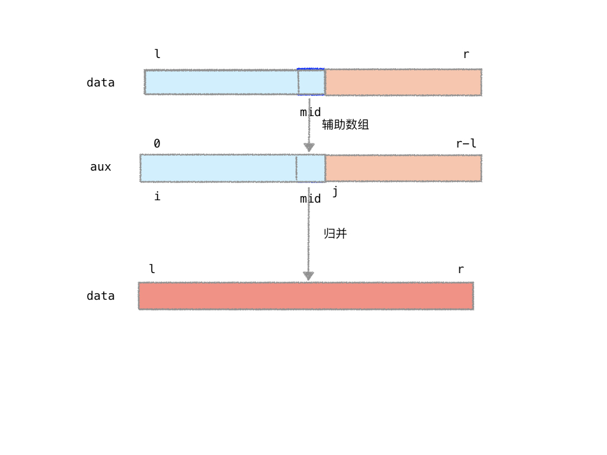
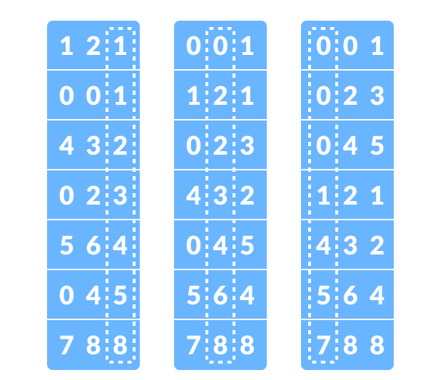
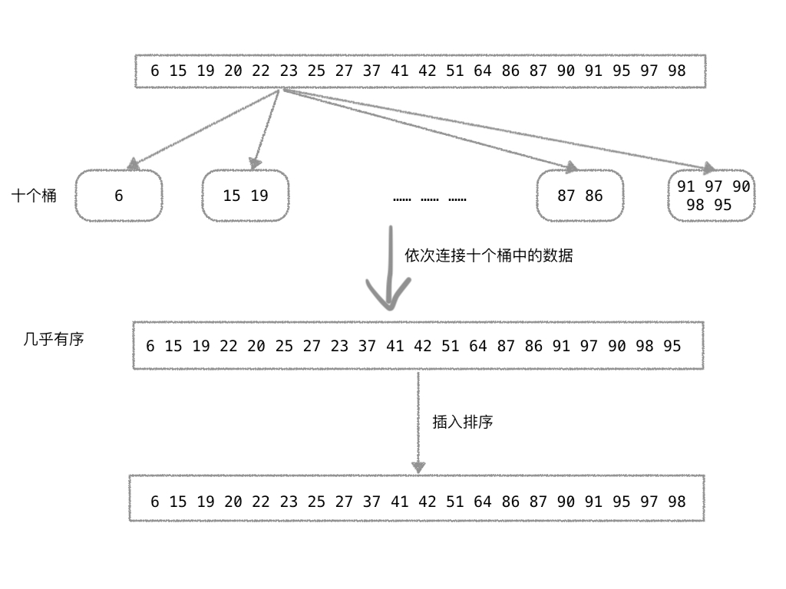
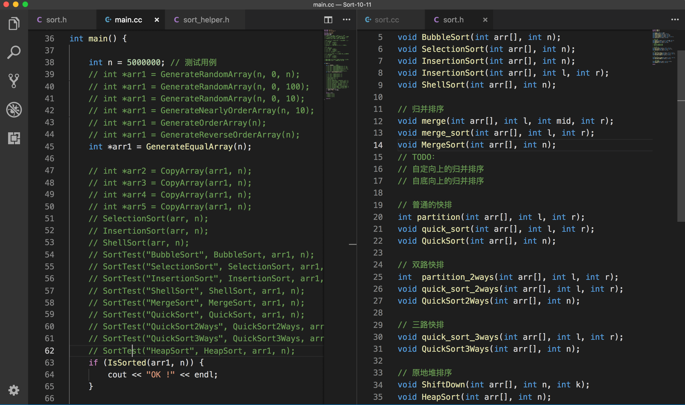
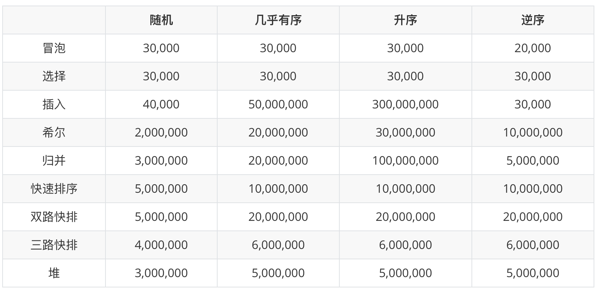

十大排序算法
#面经 #算法与数据结构
- 冒泡排序（Bubble Sort）
- 选择排序（Selection Sort）
- 插入排序（Insertion Sort）
- 希尔排序（Shell Sort）
- 快速排序（Quick Sort）
- 归并排序（Merge Sort）
- 堆排序（Heap Sort）
- 计数排序（Counting Sort）
- 基数排序（Radix Sort）
- 桶子排序（Bucket Sort）
冒泡排序
// 冒泡排序
void bubble_sort(int data[], int n)
{
for (int i = 0; i < n; ++i)
{
for (int j = 1; j < n-i; ++j)
{
if (data[j] < data[j-1])
swap(data[j], data[j-1]);
}
}
}
冒泡排序算法的优化，当数据已经成升序排放，则算法的时间复杂度为 O(n)。
// 冒泡排序优化
void bubble_sort2(int data[], int n)
{
bool is_sorted = false;
for (int i = 0; i < n && !is_sorted; ++i)
{
is_sorted = true; // 如果遍历一遍后，没有元素交换，则说明已经有序
for (int j = 1; j < n-i; ++j)
{
if (data[j] < data[j-1])
{
swap(data[j], data[j-1]);
is_sorted = false;
}
}
}
}
选择排序
// 选择排序
void selection_sort(int data[], int n)
{
for (int i = 0; i < n; ++i)
{
int min_index = i;
for (int j = i+1; j < n; ++j)
{
if (data[j] < data[min_index])
min_index = j;
}
swap(data[i], data[min_index]);
}
}
插入排序
插入排序算法有一个很明显的优势，当数据几乎有序时，算法的时间复杂度可以将为线性的。插入排序可作为其他排序算法的子过程，进行优化。
// 插入排序
void insertion_sort(int data[], int n)
{
for (int i = 0; i < n-1; ++i)
{
for (int j = i+1; j > 0 && data[j] < data[j-1]; --j)
swap(data[j], data[j-1]);
}
}
希尔排序
布长的选择：
while (h < n/3)
h = h*3 + 1; // 1 4 13 43 …

// 希尔排序
void shell_sort(int data[], int n)
{
int h = 1;
while (h < n/3)
h = h*3 + 1; // 1 4 13 43 ...
while (h >= 1)
{
for (int i = h; i < n; ++i)
{
for (int j = i; j >= h && data[j] < data[j-h]; j -= h)
swap(data[j], data[j-h]);
}
h /= 3;
}
}
快速排序
快速排序的核心在于切分（partition ）。
单路快排

// 单路快排
int partition(int data[], int l, int r)
{
int v = data[l];
int p = l, i = l + 1;
for (; i <= r; ++i)
{
if (data[i] > v)
continue;
else
{
swap(data[i], data[++p]);
}
}
swap(data[l], data[p]);
return p;
}
双路快排
最常用的快速排序算法的 partition 是双路快排。

// 双路切分
int partition_2ways(int data[], int l, int r)
{
int v = data[l];
int i = l+1, j = r;
while (true)
{
while (i <= r && data[i] <= v)
i++;
while (j >= l && data[j] > v)
j--;
if (i > j)
break;
swap(data[i], data[j]);
i++;
j--;
}
swap(data[l], data[j]);
return j;
}
三路快排
拥有大量重复元素时，性能相比双路快排得到优化。不常用

void quick_sort_3ways(int data[], int l, int r)
{
if (l >= r)
return;
// 切分
int v = data[l]; // 基准值
int lt = l, i = l + 1, gt = r + 1;
while (i < gt)
{
if (data[i] < v)
{
swap(data[i], data[lt+1]);
i++;
lt++;
}
else if (data[i] > v)
{
swap(data[i], data[gt-1]);
gt--;
}
else // ==
i++;
}
swap(data[l], data[lt]);
// data[l ...lt-1] < v
// data[lt … gt-1] == v
// data[gt …r] > v
quick_sort_3ways(data, l, lt-1);
quick_sort_3ways(data, gt, r);
}
void quick_sort_3ways(int data[], int n)
{
quick_sort_3ways(data, 0, n-1);
}
归并排序

void merge(int data[], int l, int mid, int r)
{
int* aux = new int[r-l+1];
for (int i = l; i <= r; ++i)
aux[i-l] = data[i];
// merge
int i = l, j = mid+1;
for (int k = l; k <= r; ++k)
{
if (i > mid)
{
data[k] = aux[j-l];
j++;
}
else if (j > r)
{
data[k] = aux[i-l];
i++;
}
else if (aux[i-l] < aux[j-l])
{
data[k] = aux[i-l];
i++;
}
else
{
data[k] = aux[j-l];
j++;
}
}
delete [] aux;
aux = nullptr;
}
void merge_sort(int data[], int l, int r)
{
if (l >= r)
return;
int mid = l + (r - l) / 2;
merge_sort(data, l, mid);
merge_sort(data, mid+1, r);
merge(data, l, mid, r);
}
// 归并排序
void merge_sort(int data[], int n)
{
merge_sort(data, 0, n-1);
}
堆排序
// 节点 k 进行下沉操作
// k 的左孩子:2*k+1 右孩子:2*k+2
void sink(int data[], int n, int k)
{
while (2*k+1 < n)
{
int j = 2*k + 1; // 左孩子
if (j+1 < n && data[j+1] > data[j]) //i 比较左右孩子
j++;
if (data[k] < data[j])
swap(data[k], data[j]);
k = j; // 继续下沉
}
}
// 堆排序
void heap_sort(int data[], int n)
{
// 从最后一个非叶子节点开始执行下沉操作
for (int k = (n-2)/2; k >= 0; --k)
sink(data, n, k);
for (int i = n-1; i > 0; --i)
{
swap(data[0], data[i]); // data[0] 为堆中的最大值
sink(data, i, 0); // 重新调整，使之满足最大堆
}
}
计数排序
// 计数排序
// 0 <= data[i] < n
void counting_sort(int data[], int n)
{
int max = data[0];
for (int i = 1; i < n; ++i)
{
if (data[i] > max)
max = data[i];
}
int* count = new int[max+1];
int* aux = new int[n];
for (int i = 0; i < max+1; ++i)
count[i] = 0;
for (int i = 0; i < n; ++i)
count[data[i]]++;
for (int i = 1; i <= max; ++i)
count[i] += count[i-1];
for (int i = n - 1; i >= 0; —i)
{
aux[count[data[i]] - 1] = data[i];
count[data[i]]--;
}
for (int i = 0; i < n; ++i)
data[i] = aux[i];
delete [] aux;
delete [] count;
aux = nullptr;
count = nullptr;
}
基数排序

int get_max(int data[], int n)
{
int max = data[0];
for (int i = 1; i < n; ++i)
{
if (data[i] > max)
max = data[i];
}
return max;
}
// 计数排序只需要对 0-9 进行计数排序
// 参数 place 表示位(个/十/百…)
void counting_sort_ten(int data[], int n, int place)
{
int max = 10; // [0...9]
int* count = new int[max];
int* aux = new int[n];
for (int i = 0; i < max; ++i)
count[i] = 0;
for (int i = 0; i < n; ++i)
count[(data[i] / place) % 10]++;
for (int i = 1; i < max; i++)
count[i] += count[i - 1];
for (int i = n - 1; i >= 0; --i)
{
aux[count[(data[i] / place) % 10] - 1] = data[i];
count[(data[i] / place) % 10]--;
}
for (int i = 0; i < n; ++i)
data[i] = aux[i];
delete [] aux;
delete [] count;
aux = nullptr;
count = nullptr;
}
// 基数排序
void radix_sort(int data[], int n)
{
int max = get_max(data, n);
for (int place = 1; max / place > 0; place *= 10)
counting_sort_ten(data, n, place);
}
桶子排序

// 桶子排序 [0…100]
void bucket_sort(int data[], int n)
{
// vec[0] : [0…9]
// vec[1] : [10…19]
// vec[2] : [20…29] …..
vector<vector<int> > vec(10);
for (int i = 0; i < n; ++i)
vec[(data[i]/10)].push_back(data[i]);
int k = 0;
for (int i = 0; i < 10; ++i)
{
for (int j = 0; j < vec[i].size(); ++j)
{
data[k] = vec[i][j];
k++;
}
}
// 已经几乎有序，调用插入排序算法
insertion_sort(data, n);
}
排序算法的测试

在我的电脑上，各种算法一秒内可以完成排序的整型数个数。
